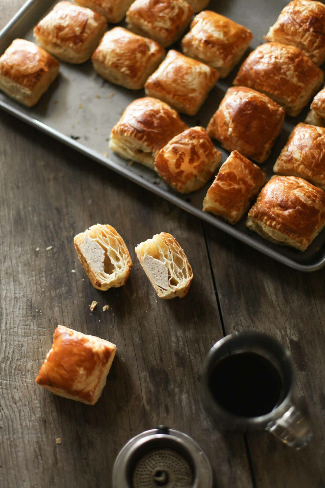

Pate Chaud

Source
Description
Pâté chaud, or bánh patê sô, is a flaky, buttery, and piping hot savory meat pie that goes great with a cup of Vietnamese coffee. This is very similar to the popular Australian hand pies.
They are the perfect on the go snack or even an at-your-own-leisure with coffee snack at home! This recipe gives you steamy pâté chaud at home that you can share with friends and family when the cravings hit.
Ingredients
Dough & Sealer
- 1 pack puff pastry
- 1 extra large egg
Filling
- 1 lb ground pork or ground chicken
- ⅔ c chopped onion, sweated with 2 tbsp oil until fragrant, then cooled
- 1 tsp salt
- 2 tsp sugar
- 1 tsp ground pepper
- ⅓ tsp MSG (monosodium glutamate) or chicken bouillon
- 1 tsp potato starch or 2 tbsp bread crumbs
Steps
Defrost
- Defrost the puff pastry dough on the counter for about one to two hours. You want to make sure that the dough is a little frozen so that it doesn’t over-soften while you work with the dough.
Filling Prep
- Sweat onions on medium-low heat until fragrant then set aside until cooled, about five minutes.
- Combine the onions, ground meat, salt, sugar, ground pepper, MSG, and potato starch into a bowl and mix well.
- Taste test: put ½ tsp meat in the microwave on a small plate and taste it to make sure you like the seasoning, adjust as needed.
Assembly & Baking
- Preheat the oven at 350 °F degrees.
- Unfold the dough carefully and if there are any cracks, make sure to lightly roll out the cracks. If you find your dough softening too much, put it back in the fridge to solidify.
- Cut the dough into three by three inch squares.
- The amount of filling you add onto each square varies depending on the size of the square. For a three by three square, spoon in about 1.5-2 tablespoons filling onto the middle of each square. The goal is to add enough that’s a good dough to meat ratio, but not overload it so the top layer has to stretch too much, or so much that the filling will spill out.
- Separate the egg whites and yolks of two small eggs into two bowls.
- Brush the egg whites along the edges of the square and gently place the top square over the meat filling.
- Using the tips of a fork, crimp the edges of the square to seal the top and bottom squares.
- Lightly brush the egg yolk over the top. This creates a nice golden crust when baked.
- Place all of your pâté chaud on a half sheet over parchment paper to prevent sticking.
- Bake for about 20 to 25 minutes until golden brown. This also varies depending on the size of your squares, but you can tell it’s finished when golden brown.